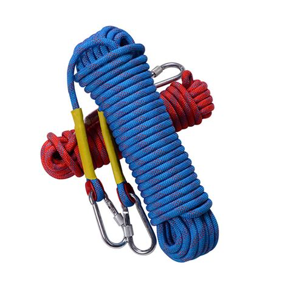
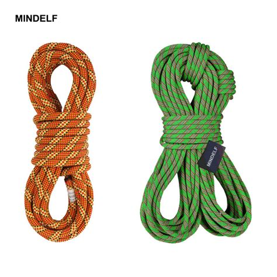

Welcome to Climbing Knots
These animated knots are for climbers, rescue workers, arborists, tower-climbers, and others who use rope in man-carrying application. A climbing rope is typically about 60 meters, or 200 feet, long. However, longer ropes are available, up to and in excess of 85 meters. Climbing ropes have changed greatly with the introduction of newer materials. Today's ropes are stronger, lighter, and thinner and come with different characteristics:
Static Ropes
Static ropes are more durable, more resistant to abrasion, and lack elasticity. They should only be employed where shock loading never occurs: rapelling (abseiling), spelunking, or canyoning. They can be used to belay a climber. However, a lead climber should never employ a Static rope: in a fall, the rope lacks the required elasticity to minimize injury. Manufacturers typically use only two colors for the sheath.
Dynamic Ropes
Dynamic (Climbing) Ropes stretch under a shock load, absorb some of the shock force to protect the climber. They are designed to belay a lead climber or for top-roping. Manufacturers typically use three or more colors for the sheath to distinguish them from static ropes.
